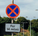
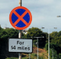

Outlines or borders can contain or form significant elements of designs.

Flags, coats of arms, Japanese family crests, company logos and military insignia share similar functions. Choose a shape for your badge.
Heraldry colours are gules, or, vert, azure, purpure, argent and sable (red, yellow, green, blue, purple, white and black) while Japanese crests and seals (kamon) are monochrome, but flags have a broader range of colours.
Patterns of spots, stars or stripes appear on flag and on shirts.
Outlines or borders can contain or form significant elements of designs.

Badges, crests and flags are often divided in half or quarters.
Bands, crosses and chevrons are often the main elements of designs.
A bold shape can be the major element of a flag or a kamakaze pilot's headband.
The saved scalable vector graphics file will appear in your downloads folder.